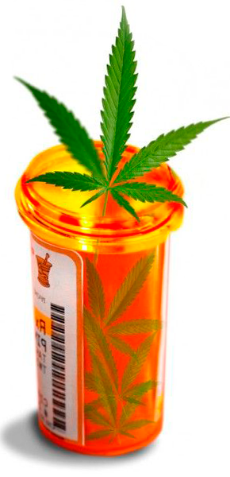
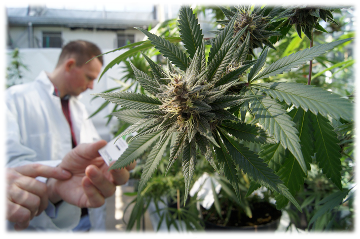

Конопля помогает при лечении многих органов. Конопляное растение издавна применялось для лечения самых тяжелых заболеваний. В частности лечебные свойства марихуаны были замечены при хронических недугах. В условиях подкупаемой конкуренции конопля уступила первое место препаратам на химической основе. За ними были огромные капиталы, а марихуана была простым и наглядным средством. Благодаря стремительную процессу современных технологий, рекламе и правительству, многие народные методы были вытеснены из реалий и насмешливо сделаны "бездейственными методами для шарлатанов". В число таких лекарств попала и марихуана, не смотря успешный опыт ее применения в борьбе с множеством болезней.
Лечебные свойства марихуаны для тела и лечение марихуаной онкологии
В странах, где исследование и применение конопли не запрещено бездумными бюрократами, изучение каннабиноидов и в частности конопли дает свои плоды. Поэтому там марихуана применяется в широком спектре производимых лекарств. В Израиле психоактивные качества конопли изучают согласно государственной программе. Израильские издания ежемесячно публикуют результаты исследований в области применения конопли и каннабиноидов. Такими исследованиями занимается не только Израиль но Канада, Англия, Италия, Испания и множество других стран где частично или полностью легализированная конопля и ее применение в различных целях.

Так например, поскольку конопля в Канаде не имеет бюрократических преград, Канадская медицинская ассоциация информирует общество о пользе каннабиноидов и лечебные свойства марихуаны. Одним из последних исследований Канадской ассоциации в области конопли было открытие пользы конопли при лечении рассеянного склероза. Ученые из Англии, Италии и Испании совместно доказали, что ТГК, содержащийся в растениях конопли, задерживает развитие болезни Хантингтона.Реабилитация наркозависимых
Ученые из Израиля и Американского Национального института злоупотребления алкоголя из Мэриленда считают, что конопля с высоким уровнем ТГК существенно снижает болевые ощущения при абстененции. Ученые из Китая и США предлагают новый способ лечения наркотической зависимости с помощью каннабноидов и в частности конопли. При этом длительное использование таких препаратов не провоцирует привыкания. Поэтому применение конопли в медицине более чем обосновано. При работе над конечной версией проекта «Национальной стратегии Украины в отношении наркотиков» ассоциация коноплеводов призывает государство пересмотреть свое отношение касательно конопли. Ведь психоактивные качества конопли тоже вполне применимы для лечения хронических заболеваний и наркозависимости. В документе о разработке и внедрении стратегии научного отношения к наркотикам. На подпись высокопоставленным служащим указаны детали. В частности указано, реалии на сегодня требуют медицинского подхода в применении конопли. Каннабиноиды, получаемые из конопли могут применяться в качестве анальгетиков. В лечении наркозависимоти применение конопли может заменить метадон и бупренорфин.
Лечение рака марихуаной и других болезней
В Америке конопля разрешена для курения раковым больным для снятия болевого синдрома. Американский институт рака и Калифорнийский мед.центр института в Сан-Франциско подтвердили пользу конопли при борьбе с раковыми клетками.
Ученые из Англии пришли к выводу, что лечебные свойства марихуаны, в виде экстракты конопли помогают при лелчении эпилепсии, болезней кишечника, шизофрении, диабета. Учитывая все эти достижения применения конопли в медицине, многие медики и ученые в разных странах давно призывают правительства сменить свою позицию относительно конопли.
Применение конопли в лекарствах

В Новой Зеландии, Канаде и 8 стран Европы уже вовсю применяется препарат из конопли на основе добытых из растений конопли психоактивных веществ. В кратчайшие сроки лицензия на применение данных препаратов из конопли будет произведено в США, Германии, Франции, Италии. Тот же препарат из конопли, однако в других 15 странах доступен к продаже с некоторыми ограничениями относительно индивидуальных случаев больных. С 2011 года Израильский лекарственный комитет при Министерстве здравоохранения рекомендует признать медицинские качества конопли в виде специальной медицинской конопли. Также было внесено предложение внести медицинские сорта конопли ввести в минимальную корзину лекарств. Даже наркотические сорта конопли, которые имеют высокий уровень ТГК, и являются действительно дурманящим разум средством, разрешены для выращивания в США, Канаде, Израиле, Англии, Италии и Голландии.
Так же, ознакомиться со всем списком заболеваний которые лечаться коноплей и ее производными Вы можете по ссылке: http://4-20.com.ua/polza-marixuanyi.html